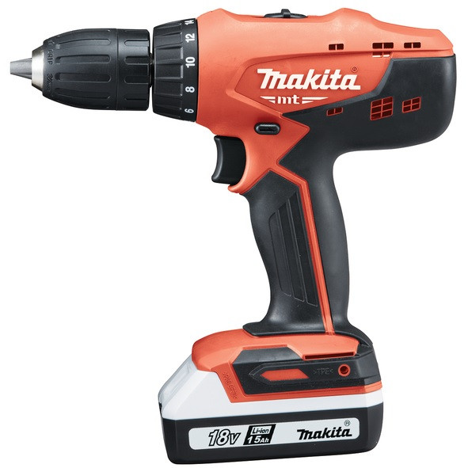
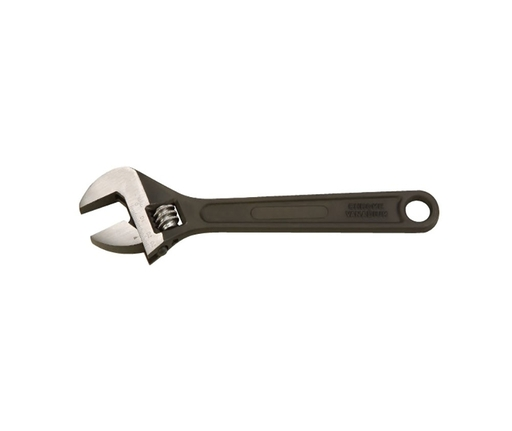

D10VC3 Fúró,csavarozó (fúrógép) 600W.jpg)
A HIKOKI (Hitachi) D10VC3 egy 600W teljesítményű fúró-csavarozó, amely ideális otthoni és professzionális barkácsoláshoz egyaránt. Kompakt és könnyű súlya (1.4 kg) révén kényelmesen használható, a puha markolat pedig biztos fogást nyújt.
.jpg)
Az EXTOL PREMIUM Fejsze, üvegszálas nyéllel egy kiváló minőségű fejsze, amely ideális fa hasításához és vágásához. A fejsze edzett C45 szénacélból készült feje HRC 42-52 keménységű, így tartós és éles marad. A hosszú, 60 cm-es üvegszálas nyél kényelmes fogást biztosít és ütést csillapít. A fejsze csúszásmentes TPR markolattal rendelkezik, így biztonságosan tartható.

A HEIMWERK 250TMA AWI Inverteres Hegesztő egy kompakt hegesztő otthoni és hobbi használatra. AWI és MMA hegesztésre is alkalmas acélhoz, rozsdamentes acélhoz, öntöttvashoz és alumíniumhoz. Áram beállítható, könnyű ívgyújtású, IP21S védelemmel rendelkezik. Tökéletes kezdőknek és hobbihegesztőknek!

A Makita MT 18V fúró-csavarbehajtó egy kompakt és könnyű fúró-csavarbehajtó, amely ideális otthoni és professzionális barkácsoláshoz egyaránt. 18 V-os lítiumion akkumulátorral van felszerelve, amely nagy teljesítményt és hosszú üzemidőt biztosít. A fúró-csavarbehajtó két sebességgel és 23 nyomatékbeállítással rendelkezik, így precízen beállíthatja a sebességet és a nyomatékot a feladathoz illeszkedően.

Állítható Villáskulcs (Franciakulcs) 10"/250mm univerzális szerszám otthoni és profi használatra. 10-32mm csavarokhoz és anyákhoz jó, króm-vanádiumból készült a tartósságért.

Az Extol 10m mérőszalag egy 10 méter hosszú, 25 mm széles mérőszalag, mely acél szalaggal és műanyag tokozással rendelkezik. Gumírozott fogantyúja és stop gombja kényelmes használatot biztosít, míg a cm és hüvelyk beosztás, valamint a kétoldalas skála sokoldalúságot kölcsönöz neki. Megbízható, tartós és számos feladathoz használható.
Az EXTOL PREMIUM Fejsze, üvegszálas nyéllel egy kiváló minőségű fejsze, amely ideális fa hasításához és vágásához. A fejsze edzett C45 szénacélból készült feje HRC 42-52 keménységű, így tartós és éles marad. A hosszú, 60 cm-es üvegszálas nyél kényelmes fogást biztosít és ütést csillapít. A fejsze csúszásmentes TPR markolattal rendelkezik, így biztonságosan tartható.
A HEIMWERK 250TMA AWI Inverteres Hegesztő egy kompakt hegesztő otthoni és hobbi használatra. AWI és MMA hegesztésre is alkalmas acélhoz, rozsdamentes acélhoz, öntöttvashoz és alumíniumhoz. Áram beállítható, könnyű ívgyújtású, IP21S védelemmel rendelkezik. Tökéletes kezdőknek és hobbihegesztőknek!
A Makita MT 18V fúró-csavarbehajtó egy kompakt és könnyű fúró-csavarbehajtó, amely ideális otthoni és professzionális barkácsoláshoz egyaránt. 18 V-os lítiumion akkumulátorral van felszerelve, amely nagy teljesítményt és hosszú üzemidőt biztosít. A fúró-csavarbehajtó két sebességgel és 23 nyomatékbeállítással rendelkezik, így precízen beállíthatja a sebességet és a nyomatékot a feladathoz illeszkedően.
Állítható Villáskulcs (Franciakulcs) 10"/250mm univerzális szerszám otthoni és profi használatra. 10-32mm csavarokhoz és anyákhoz jó, króm-vanádiumból készült a tartósságért.